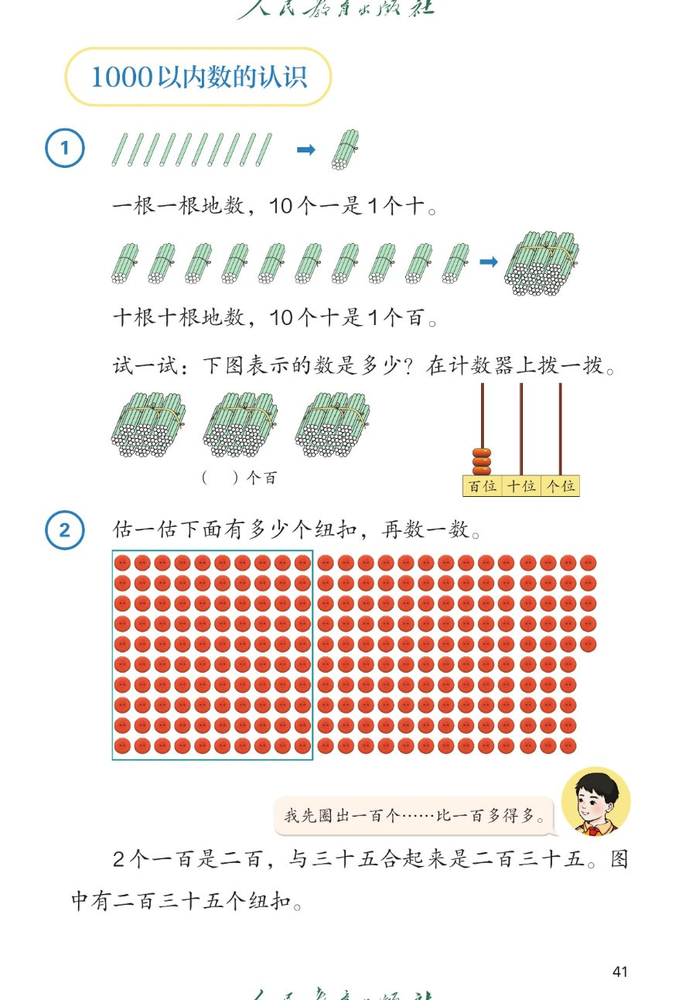

×
🔊 手机听不到声音怎么办？
① 先把手机
媒体音量调大
，确认没开静音、没连蓝牙耳机；在微信里打开的，点右上角「⋯ → 用浏览器打开」。
② 还是没声音？到应用商店免费下载
Microsoft Edge 浏览器
（它自带朗读发声），用它打开本页面就能出声。
③ 换了 Edge 仍然没声音，说明这部手机的
硬件/系统不支持
网页朗读（多为老旧机型）；近几年买的新手机一般都能正常播放。
→ 打开声音自检
1000 以内数的认识（例1、例2）
十根捆成一捆——10个一是1个十，10个十是1个百
题数
6
认知
2
强化
3
拓展
1
本页重点
10个一是1个十，10个十是1个百；235 由2个百、3个十、5个一组成
🎧 分两步学：
① 解析教材图片
——纯声音读图，读到哪一块哪一块闪动提示；关键处先倒计时让你思考，再在图片下方给出解析并朗读。
② 分层提问练习
——六道分层题（认知 / 强化 / 拓展），先思考再展开解析、朗读参考答案；这一步不再回到图片。
也可以随时点任意一句话、图上任意一块单独听；点课本文字卡还会展开答案。
教材图片（点块听读，读到哪块哪块闪）

📖 课本第 41 页 · 图片仅供个人学习，版权归人民教育出版社所有
🤔 想一想（点我可跳过）
课本的文字（点句子：听读 + 看答案）
例1
10个一是多少？为什么十根要捆成一捆？
看答案 ▾
一根一根数：1、2、3……9、10；
十根捆成一捆，这一捆就是
1 个十
；
💡 10 个一＝1 个十，捆一捆是为了让人一眼看出有几个十。
例1
10个十是多少？
看答案 ▾
一捆是 1 个十，十捆就是 10 个十；
十捆再捆成一大捆，这一大捆是
1 个百
；
💡 10 个十＝1 个百，一大捆有一百根小棒。
试一试
三捆小棒是多少？计数器怎样拨？
看答案 ▾
三捆，每捆 100 根 → 3 个百 → 括号里填
3
；
计数器：
百位拨 3 颗
，十位、个位不拨；
💡 几个百，就在百位上拨几颗珠子。
例2
两百三十五个纽扣，是怎么数出来的？
看答案 ▾
先圈出一个百：一百个纽扣；
2 个一百是二百，与 35 合起来是
235
；
💡 数很多的东西，先圈百、再圈十，最后数零散的几个。
分层提问练习（先想后看解析）
🌱
认知
10 个一是多少？
看解析
🤔 想一想
怎么想的：
先一根一根地数到十根，再把十根捆成一捆，看这一捆表示什么，最后得出十个一就是一个十。
解析：
一根一根数：1、2、3……9、10，满十根就捆成一捆。
这一捆就是
1 个十
，所以
10 个一＝1 个十
。
🌿
认知
10 个十是多少？
看解析
🤔 想一想
怎么想的：
先想一捆小棒表示一个十，再十捆十捆地数，最后把十捆捆成一大捆，看这一大捆表示多少。
解析：
一捆＝1 个十；十捆就是 10 个十。
十捆捆成一大捆＝100 根，所以
10 个十＝1 个百
。
🔢
强化
235 里面有几个百、几个十、几个一？
看解析
🤔 想一想
怎么想的：
先把 235 拆成二百和三十五，再把三十五拆成三十和五，最后数一数百、十、一各有几个。
解析：
二百是
2 个百
；三十五是 3 个十和 5 个一。
合起来检查：200＋30＋5＝235，所以是
2 个百、3 个十、5 个一
。
🧮
强化
试一试里的三捆小棒一共多少根？计数器百位要拨几颗？
看解析
🤔 想一想
怎么想的：
先看一捆是多少根，再数一共有几捆，然后算出几个百是几百，最后把几个百拨到计数器的百位上。
解析：
一捆 100 根＝1 个百，三捆就是 3 个百，是
300 根
。
计数器上
百位拨 3 颗
，十位、个位不拨。
⭕
强化
数纽扣时，先圈出一个百有什么用？
看解析
🤔 想一想
怎么想的：
先想纽扣又多又密、直接数会怎样，再想圈出一个百后剩下多少，最后明白分块数更清楚。
解析：
一颗一颗数容易乱、容易漏，圈出一个百就先数好一百颗。
剩下的就好数了：
一个百加剩下的
，又快又准。
💡
拓展
有一堆小棒，比二百多、比三百少，怎样数得又快又准？
看解析
🤔 想一想
怎么想的：
先想这堆小棒在二百和三百之间，再想按十根一捆分好，最后把百、十、一分开数再合起来。
解析：
十根一捆，捆满十捆就是一百根，先数出两个百。
再看剩下几捆十、几根单根，合成
几百几十几
。
① 解析教材图片
② 分层提问练习
⏹ 停止
纯声音 + 高亮跟随 · 想好才出解析